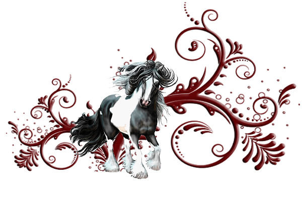

Gypsian Sport Horses
The Gypsian is the progeny of mating a purebred, registered Friesian with a registered Gypsy horse. THe outcome of this mating has resulted in a most incredible equine with the intelligence, hair and hardiness of the Gypsy and the size, movement and elegance of the Friesian. The Gypsian is the result of melding the sought after characterisitics of two incredible breeds into one. Presently the Gypsian is growing in numbers and popularity both in the United States and in Europe.
The Friesian horse was originally bred in Friesland, a province of the Netherlands. Friesians are known for their elegance as well as their dramatic, animated leg action. They have abundant manes and tails with feather on lower legs. They are a large horse, often 16 hands, and are most often recognized by their black coloring. The Friesian is popular in both English and Western disciplines.
The Gypsy horse was originally bred by the Romany people of Europe to pull their vardos or living wagons. They are powerful and compact yet very athletic. Gypsy horses are most known for the presence, flashy coloring and copious amounts of hair. Butwhere they Gypsy horse really shines is their extraordinary temperament and intelligence.
The Gypsian horse is the spectacular result of combing a purebred, registered Friesian and a registered Gypsy horse. This extraordinary union has the elegant movement, presence and gracefulness from the Friesian, melded with the hair, hardiness and termperament of the Gypsy, wrapped in a multitude of diverse colors.